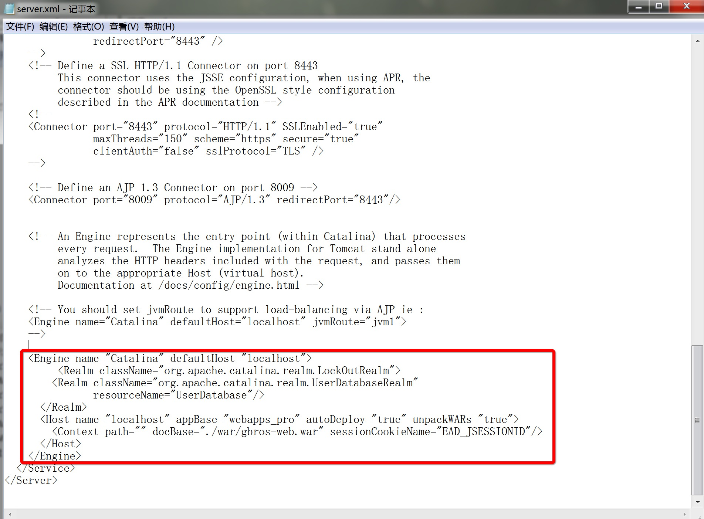

1.1.3 安装 Tomcat
EAD 所运行的 Web 容器为 Tomcat，版本为 Tomcat 7.0+ 。 Tomcat 下载地址：http://tomcat.apache.org
1. 下载服务器 JDK 或者 JRE，配置到 Tomcat 环境中
根据服务器环境 EAD 目录设置及软件位置，设置 Tomcat 中 JDK & JRE。
在 bin/setclasspath.bat 文件中配置 JDK 或 JRE 的路径。

set JRE_HOME=..\..\java_home\jre7
2. 把 Tomcat 加入到 Windows 服务中
安装为 Windows 服务命令：
service.bat install {服务名称}
如：service.bat install Tomcat7
删除 Tomcat Windows 服务命令：
service.bat uninstall
3. Tomcat 端口 & EAD HOST 配置

<Service name="Catalina">
<Connector URIEncoding="UTF-8" connectionTimeout="20000" port="8080" protocol="HTTP/1.1" redirectPort="8443"/>
<Connector port="8009" protocol="AJP/1.3" redirectPort="8443"/>
<Engine name="Catalina" defaultHost="localhost">
<Realm className="org.apache.catalina.realm.LockOutRealm">
<Realm className="org.apache.catalina.realm.UserDatabaseRealm"
resourceName="UserDatabase"/>
</Realm>
<Host name="localhost" appBase="webapps_pro" autoDeploy="true" unpackWARs="true">
<Context path="" docBase="./war/gbros-web.war" sessionCookieName="EAD_JSESSIONID"/>
</Host>
</Engine>
</Service>
</Server>